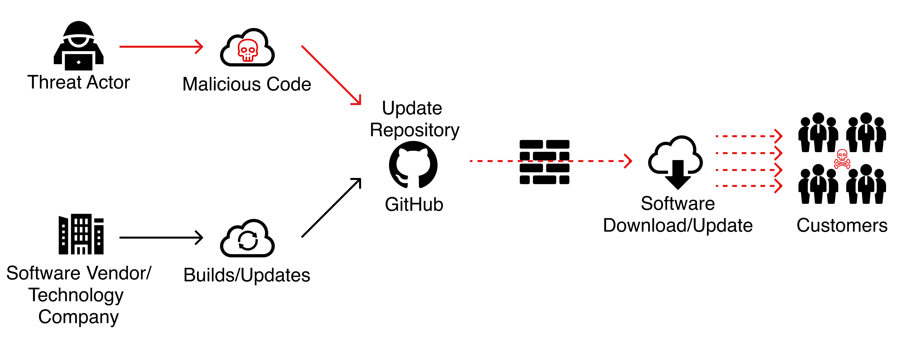

از اونبونتو تا اینبونتو ۲۲.۰۴
Jadi.net
twitter.com/jadi
Instagram.com/jadijadinet
Youtube.com/jadimirmirani
... :)

22.04
30
Realtime Ubuntu
Centos ⇶ Rocky, Alma, Ubuntu, ... (26M Funding)

Ubuntu Touch Phones
more models, fairphone, lasts longer, ..
Python in Browser
Return Of RMS
Cancel Culture
China Pushes Linux

Arch Installer ;)
Edge On Linux

Supply Chain Attacks
& Some Solutions
:)